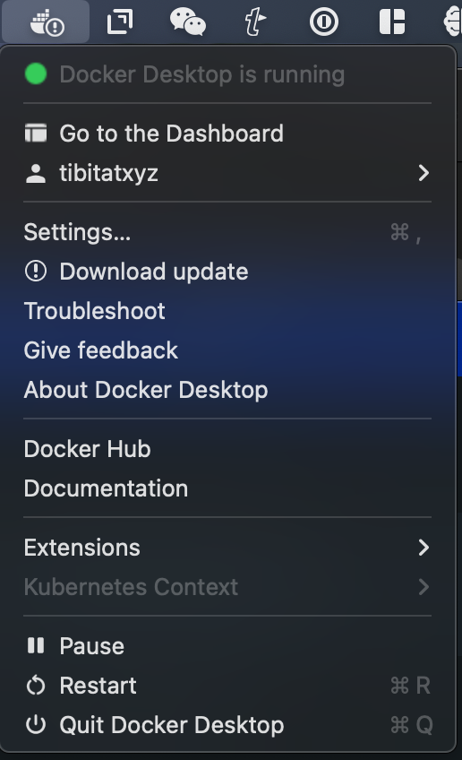
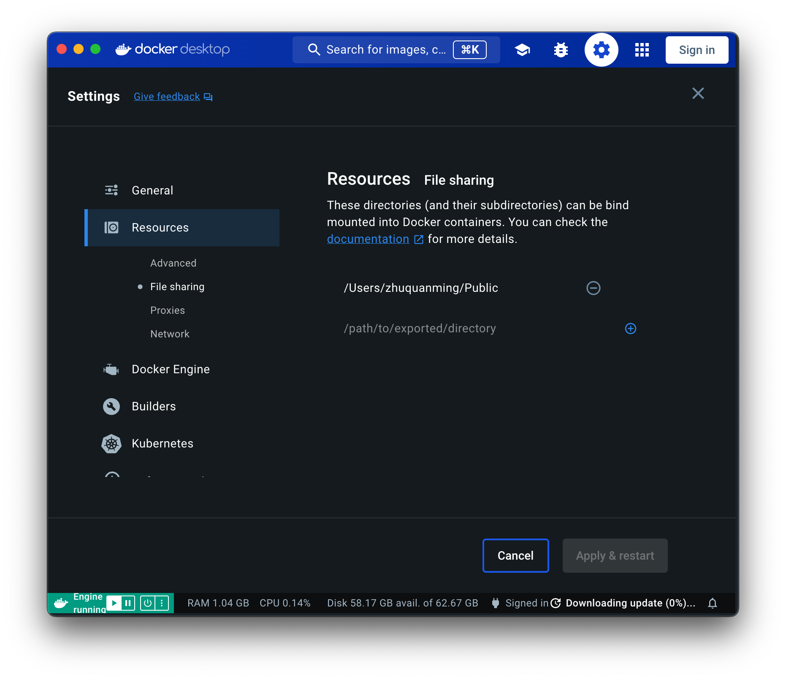
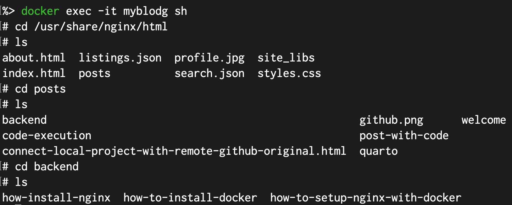
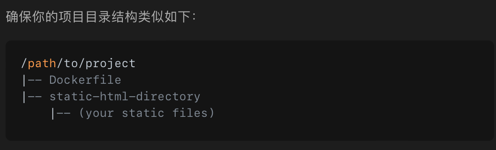
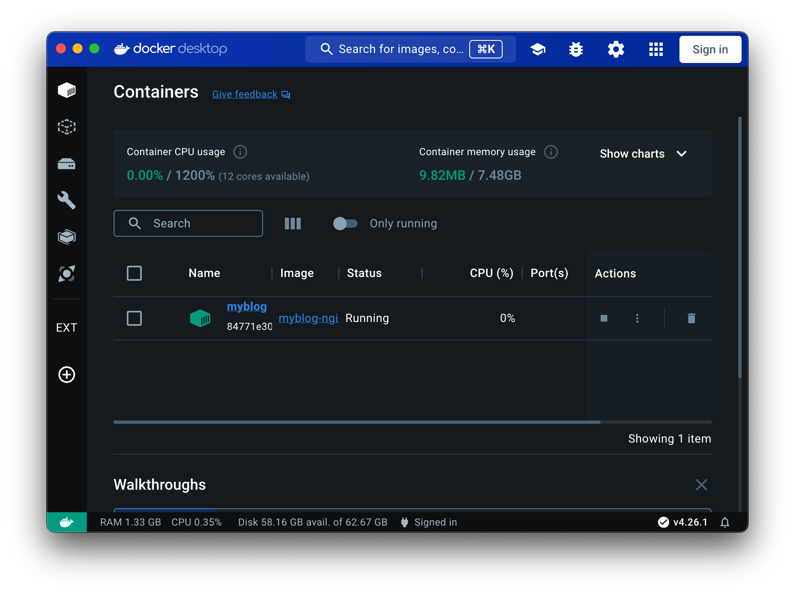

nginx docker 初体验
上回书
ubuntu 安装了
ssh设置好了
docker安装了了
nginx的镜像拉取了
是时候把
本地测试一下
文本内容都在本地，刚后docker也不得不安装了，就测试一下好了。
localwww <- “~/Projects/adopapablog/_site”
docker run –name myblodg -v /~/Projects/adopapablog/_site:/usr/share/nginx/html:ro -d nginx
1a91bd54593599aadb15ae8c04ce4446e151ba930da365eea338e07a06618d22 docker: Error response from daemon: Mounts denied: The path /~/Projects/adopapablog/_site is not shared from the host and is not known to Docker. You can configure shared paths from Docker -> Preferences… -> Resources -> File Sharing. See https://docs.docker.com/desktop/mac for more info.
看来没有设置共享文件夹，按提示设置吧。

居然把这个目录都设置为共享了，太过了，删除掉，但是不明白为什么这个设置了还是无法访问，可能是出在～上，
节外生枝的发现
quarto render 必须在项目目录下运行才有效
文件必须保存了才会被render否则还是上一版内容 图片的文件路径为什么要放在一起
扯得太远了，赶紧收回来，继续命令，不过把～替换掉
docker run –name myblodg -v /Users/yourname/Projects/myblogsite/_site:/usr/share/nginx/html:ro -d nginx
新的问题继续出现了
docker: Error response from daemon: Conflict. The container name “/myblodg” is already in use by container “1a91bd54593599aadb15ae8c04ce4446e151ba930da365eea338e07a06618d22”. You have to remove (or rename) that container to be able to reuse that name. See ‘docker run –help’.
在docker里删除即可，继续，还是上面的老问题，可能`_site`这个文件夹太诡异了，于是把它复制到～/public/myblog下
docker.app却像抽风了，怎么也打不开了。原来

 图片也可以直接拖入，然后被设置到images文件夹里了。
修正了文件名的大小写users -> Users, public -> Public
如何去访问呢？
http://localhost:8080/ 显示无法访问。
docker exec -it myblog sh
cd /usr/share/nginx/html
ls

看来文件确实别正确地挂载上去了哈。
再翻回来试试
docker run –name myblodg -v /Users/yourname/Projects/myblogsite/_site:/usr/share/nginx/html:ro -d nginx
结果ok，file sharing的折腾搞一段路了。
d ## Dockerfiles
这个文件夹该放哪里呢，项目文件夹下，终于又回到了项目里了
在项目文件夹下运行
docker build -t myblog-nginx .
出现了一堆问题，扔给ai，它认为是Dockerfile里使用了绝对路径导致的。Docker 构建过程中，COPY 指令只能访问构建上下文中的相对路径。

docker build -t myblog-nginx .` 继续构建自己的第一个订制nginx docker image，果然OK了。
成功构建镜像后，运行容器：
docker run –name myblog -d myblog-nginx

虽然什么都没有，还是感觉尽头十足啊。
接下来该暴露端口了，
docker run --name myblogsite -d -p 8080:80 myblog-nginx
open http://localhost:8080网站如约出现了，怎么刚写的文字没有出现呢，赶紧保存后用quarto render一下，看看页面还是没有更新，看来要在docker里重启一下myblogsite？ 重启后还是依然故我，看来这个不像quarto preview那么有及时预览的功能。真正的原因是之前的版本被固化到了镜像里，它完全不知道我的开发目录里发生的新变化。
明天继续吧，通过实战把一些长久以来都比较混淆的概念夯实了一下，当人没有ai帮助，确实是无法实现这个目标的。